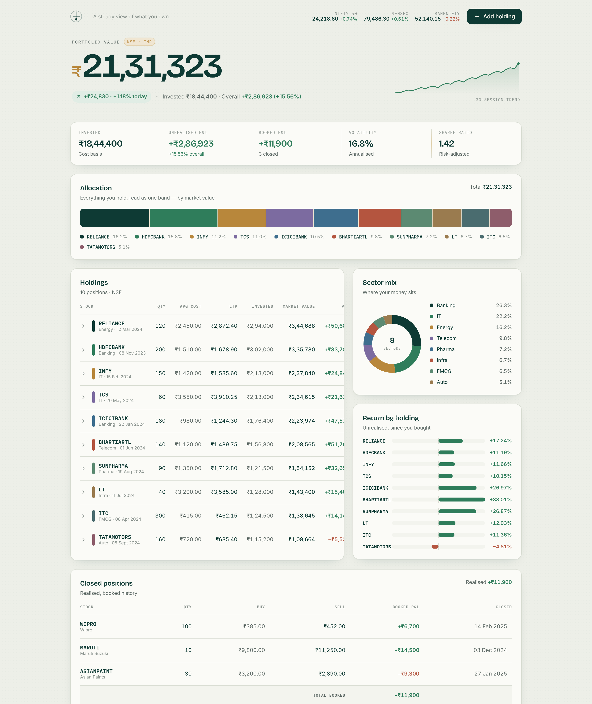
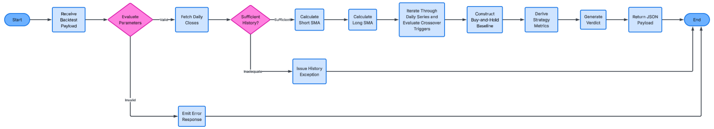
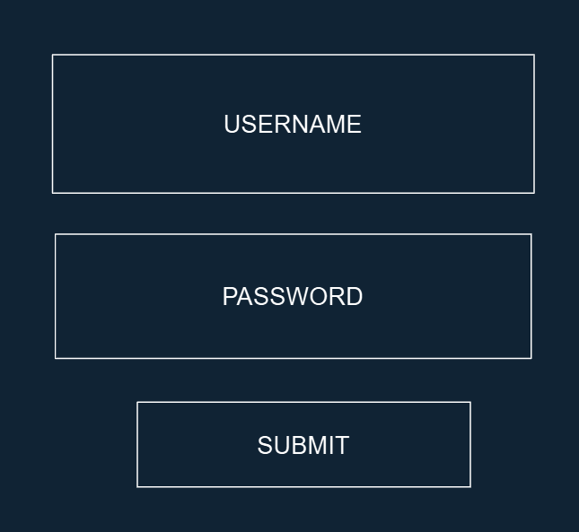
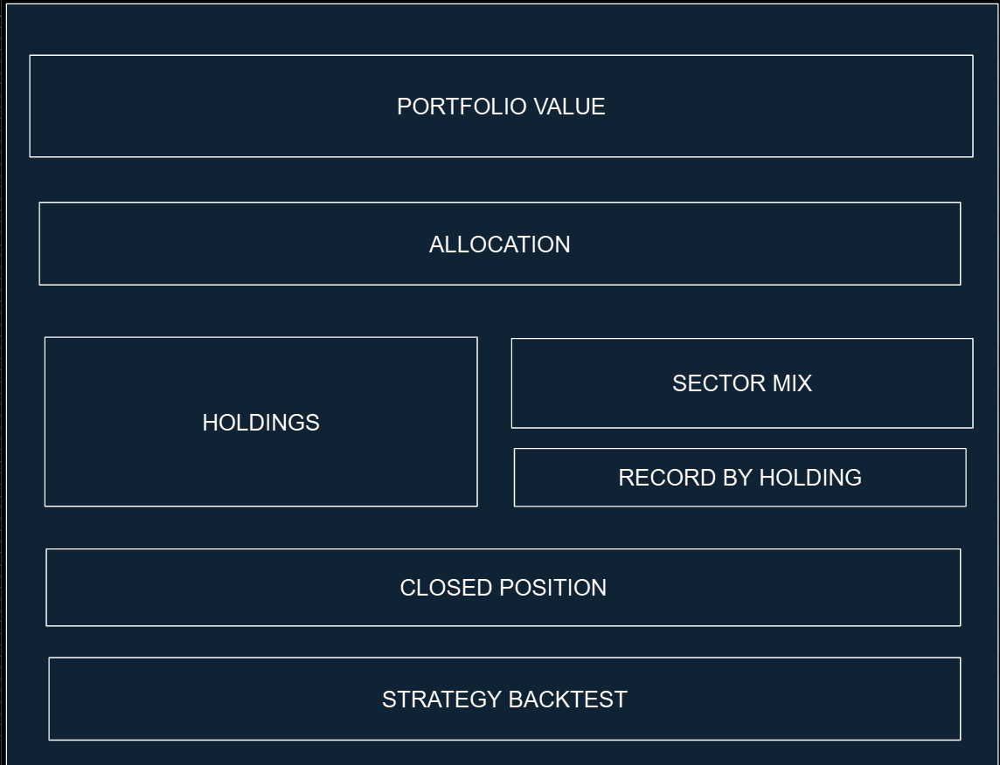
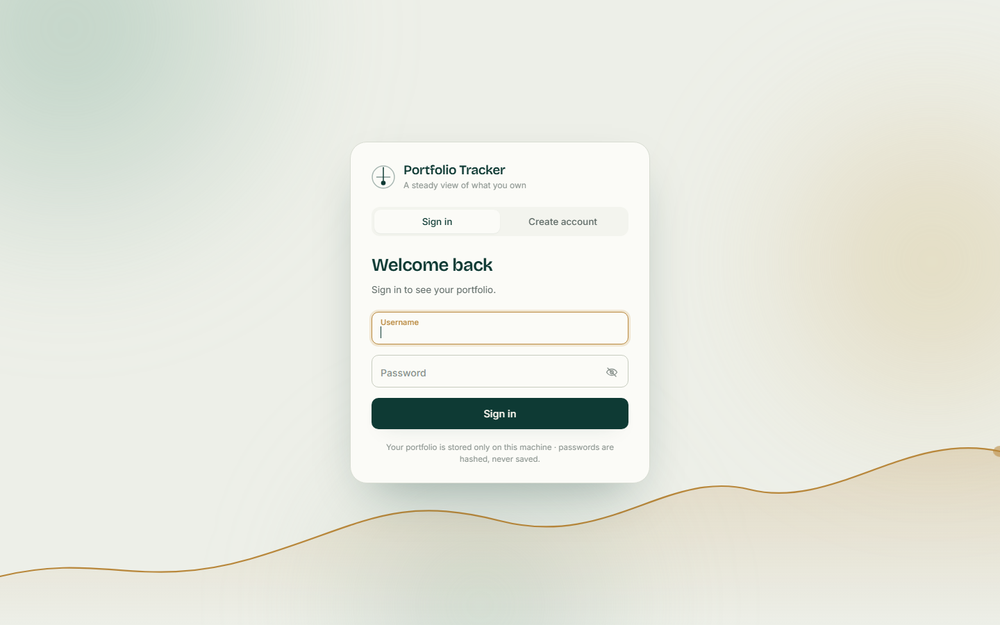
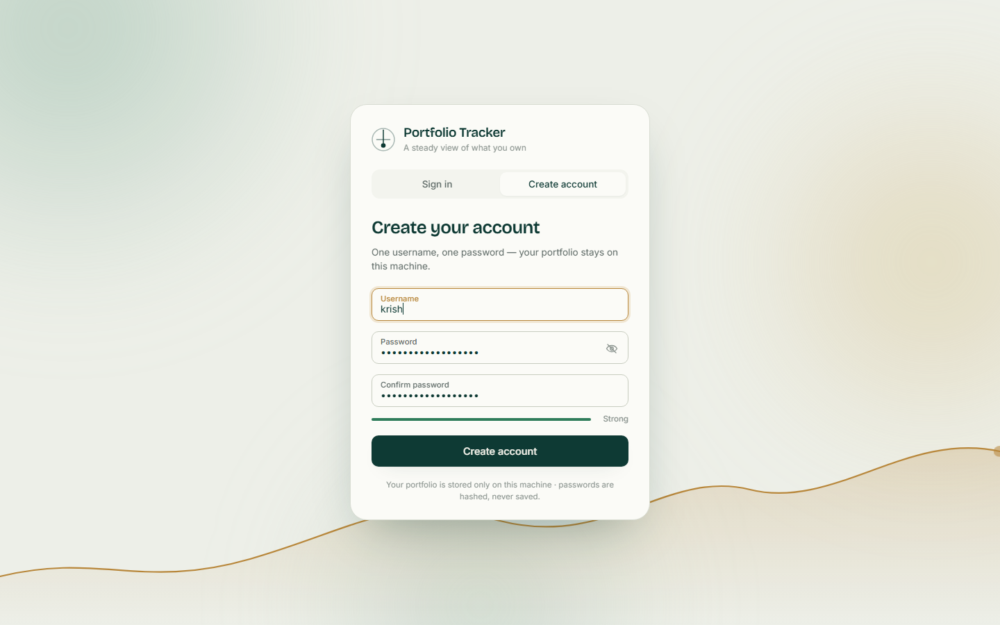
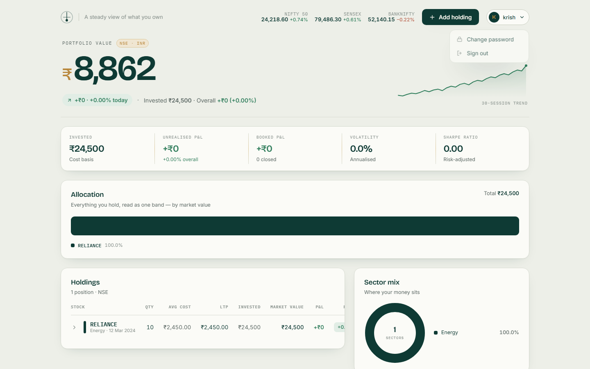
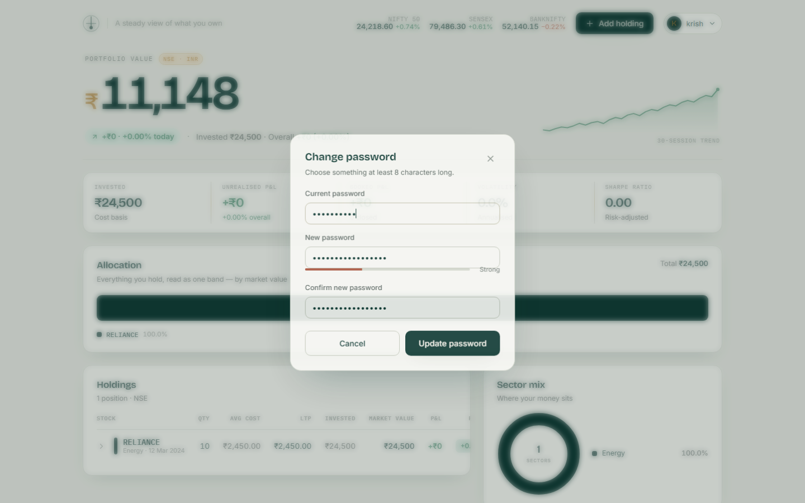

Comparison of Project_Writeup_BEFORE_EDIT.docx and Project_Writeup.docx, the corrections made, the parts that were missing and have now been built, and what is still needed from you. Generated 30 Sep 2026.
The file names are misleading. By timestamp and content, the "BEFORE_EDIT" file is actually the newer, more developed one.
| File | Modified | What it really is |
|---|---|---|
Project_Writeup.docx | 27 Sep 2026 | The old generated scaffold (still had the "How to use this document" box, mark-band notes, and a [YOUR INPUT] where the interview should be) plus Appendices E–H and the dashboard screenshot. |
Project_Writeup_BEFORE_EDIT.docx | 30 Sep 2026 | The student-edited version: title page, table of contents, real interview with Krish, sub-problem table, architecture table, login design, worked examples, algorithms (f) sell and (g) trade statistics, error-response contract, wireframes, hand-computable backtest, 17 post-dev tests, traceability matrix — but no Appendices E–H. |
Project_Writeup_MERGED.docx | new | The result: BEFORE_EDIT as the base, every problem below corrected, Appendices E–H and the screenshot merged in. |
Sections that were identical in both files and were left untouched: §1.1, §1.2 (body), §1.4, §1.5, §1.8, all of §3, all of §4, Appendices A and D.
Each item below was wrong in Project_Writeup_BEFORE_EDIT.docx. The correction has been applied in Project_Writeup_MERGED.docx.
users, holdings, closed_positions, instruments.users table and POST /api/login, §2.4 validates username/password, and §2.6 has a login wireframe./api/login), so the design and the build disagreed. The accounts feature has since been implemented end to end (see section 7) and the write-up now documents it as Stage 6 (§3.8), so §1.6, §2.3, §2.4, §2.6 and §2.7.3 all describe something that exists.close[0], §2.7.2 buys 100 shares on day 0, and backtest.py uses closes[0].# Benchmark: buy on day 1, hold to the end.
first_price = closes[0]
bench_shares = int(capital // first_price)
bench_cash = capital - bench_shares * first_price
benchmark_curve = [
{"date": dates[i], "value": round(bench_cash + bench_shares * closes[i], 2)}
for i in range(len(closes))
]
benchmark_final = bench_cash + bench_shares * closes[-1]
beat = final_value > benchmark_final # SC7 verdictAlgorithms moved from §2.4 → §2.5 and usability from §2.5 → §2.6 when the validation section was added, but later references were not updated.
| Where | Before | After |
|---|---|---|
| §3.4 | "see 2.4d" | "see §2.5(d)" |
| §3.6 | "(§2.4c)" | "(§2.5(c))" |
| §4.3 | "usability feature from §2.5" | "…from §2.6" |
| §2.8 matrix | cited "2.3.1", which does not exist (§2.3 has only 2.3.2 and 2.3.3); SC labels didn't match §1.8 (e.g. "SC2 Weighted-average cost" vs "Value & return match a hand calculation"); header still said "(check numbering vs Analysis)" | every row now points at real sections and uses the §1.8 wording; the existing references to §2.5(f) sell and §2.5(g) trade statistics are kept |
| Where | Placeholder that was still there | Now says |
|---|---|---|
| §2.1.3 | "[YOUR INPUT: one or two sentences on which module you'll build first and why…]" | Build order: persistence first (SC1, no network needed) → Zerodha → risk maths → front end → backtest, matching §2.7.1 and §3. |
| §2.6 | "[YOUR INPUT: quote your stakeholder's actual feedback.]" | Quotes Krish's own words from the §1.3 interview: "please keep the screen simple and clean" / "it makes me anxious". |
| §2.7.3 | "[Record user details and dates.]" | "The stakeholder session is recorded in §4.1 (T5) and §4.6." |
The base file already contained duplicate bookmark ids (23, 37), which the OOXML validator flags. All bookmark ids are now renumbered uniquely; the merged file passes validation ("All validations PASSED").
| Missing from BEFORE_EDIT | Why it was needed | Status |
|---|---|---|
| Appendix E — Prerequisites & Setup | Appendix B promised a setup guide; an examiner/maintainer must be able to run the system. | added |
| Appendix F — Functionalities & API Reference | Appendix C promised a technical overview; documents all 12 endpoints and the four running modes. | added |
| Appendix G — Common Problems & Debugging | Maintenance evidence for §4.4 (mark-scheme: "maintenance issues"). | added |
| Appendix H — Frontend screenshot | Evidence that Module 1 was built as designed. | added |
| Dashboard screenshot at the §3.5 📸 marker | Stage 4 needed a prototype screenshot. | added (Figure 3.1) |
| Five endpoints in the §2.3.3 API contract | The backend exposes /api/status, /api/quote, /api/portfolio/closed, /api/tickers, /api/history — the design table did not list them. | added |
| Captions on all figures | "Annotated evidence". | added |
| Screenshots at the remaining 📸 markers (§3.2, §3.3, §3.4, §3.5 Add-form error, §3.6, §4.1 T1–T4) | Development & Evaluation top bands need a screenshot per stage. | still needed |
| Your own words at every ✍️ marker (§3.7 failed tests, §4.2 hand-checks, §4.3, §4.6) | Must be the candidate's own evidence and reflection. | still needed |
| Login implementation | Design and build must agree — the write-up designed accounts that the code did not have. | built (section 7) |
Your data-structures table (closes, dates, shortSMA/longSMA, …) and the Holding class are kept unchanged. Note for the record: the table's text lives inside Word content controls, which some tools read as empty cells — it renders correctly in Word.
class Holding:
def __init__(self, id, ticker, quantity, avg_buy_price, purchase_date):
self.id = id; self.ticker = ticker; self.quantity = quantity
self.avg_buy_price = avg_buy_price; self.purchase_date = purchase_date
def invested(self): return self.quantity * self.avg_buy_price
def value(self, ltp): return self.quantity * ltp
def pnl(self, ltp): return self.value(ltp) - self.invested()
def return_pct(self, ltp): return (self.pnl(ltp) / self.invested()) * 100| Method & route | Purpose | Reply |
|---|---|---|
| GET /api/status | Health check | {connected, instrumentCount, lastError} |
| GET /api/quote/<ticker> | Latest traded price | {ticker, ltp} |
| GET /api/portfolio/closed | Realised positions | [ {ticker, quantity, avgBuyPrice, sellPrice, closeDate} ] |
| GET /api/tickers | Valid NSE symbols | [ tradingsymbol, … ] |
| GET /api/history/<ticker> | Daily closes (Module 2 data) | [ {date, close} ] |
Windows 10/11, Python 3.10+, uv, a browser, internet; optional Zerodha Kite Connect credentials. Without Zerodha the app runs in degraded mode (prices = average cost, CSV backtest).
{
"api_key": "your_kite_api_key",
"api_secret": "your_kite_api_secret",
"user_id": "your_zerodha_id",
"password": "your_zerodha_password",
"totp": "YOUR_TOTP_SECRET"
}cd backend
setup.bat # uv creates backend/.venv and installs requirements.txt
seed.bat # (live data only) download the NSE symbol list into portfolio.db
start.bat # front end on :8000, Flask API on :5000
# health check: http://localhost:5000/api/statusPer-module feature lists (F.1–F.3), the four running modes — live / degraded / CSV fallback / mock (F.4) — and the full endpoint table (F.5, 12 routes).
Ten-row troubleshooting table (mis-named config file, TOTP secret vs 6-digit code, expired daily token, unseeded instruments, port in use, missing uv, sector "Other") plus a debugging toolkit (/api/status, Flask traceback, DevTools Network tab, mock mode to isolate layers, SQLite viewer).
The same screenshot is now embedded twice: as Figure 3.1 evidence for Stage 4 in §3.5, and as Appendix H with a full caption.
shortSMA = SMA(closes, shortWindow)
longSMA = SMA(closes, longWindow)
cash = capital; shares = 0; position = 0
for each day i (where both SMAs exist and the previous day's exist):
crossedUp = shortSMA[i-1] <= longSMA[i-1] AND shortSMA[i] > longSMA[i]
crossedDown = shortSMA[i-1] >= longSMA[i-1] AND shortSMA[i] < longSMA[i]
if crossedUp and position == 0: # BUY at today's close
shares = floor(cash / close[i]); cash -= shares*close[i]; position = 1
else if crossedDown and position == 1: # SELL at today's close
profit = (close[i] - buyPrice) * shares
cash += shares*close[i]; shares = 0; position = 0
equityCurve[i] = cash + shares*close[i]
# Benchmark: buy on day 0, hold to the end ← now stated consistently in the prose
benchShares = floor(capital / close[0])
benchmark[i] = (capital - benchShares*close[0]) + benchShares*close[i]
beat = finalEquity > finalBenchmark # SC7 verdict



These cannot be written on your behalf — they are your evidence and reflection.
seed_instruments.py output and a /api/quote/RELIANCE response.Accounts were designed in the write-up but missing from the code. They are now implemented, tested against the running server, screenshotted, and documented in the .docx as §3.8 Stage 6, §1.7 FR12, the §2.1 tree, the §2.2 file table, the §2.3.3 API contract, §3.7 test rows, Appendices E/F/G and Appendix I.8.
| Piece | Where | Behaviour |
|---|---|---|
| Users table | backend/database.py | users(id, username UNIQUE COLLATE NOCASE, password_hash, created_at); holdings and closed_positions gain user_id. _migrate() adds the column to an old portfolio.db; the first account to register inherits any rows saved before accounts existed. |
| Passwords | backend/auth.py | Salted PBKDF2-SHA256 via werkzeug.security. The password is never stored; login compares hashes. |
| Session | backend/auth.py | Signed, 7-day bearer token (itsdangerous). Secret auto-generated into backend/.secret_key (git-ignored → NFR5). @require_login guards every data route and sets g.user_id. |
| Routes | backend/app.py | POST /api/auth/register (201), POST /api/auth/login, GET /api/auth/me, POST /api/auth/change-password. Same error for unknown user and wrong password, so nothing leaks. |
| Sign-in screen | frontend/auth.js, index.html, styles.css | Full-screen card with Sign in / Create account tabs (sliding ink), floating labels, show/hide password, strength meter, spinner → tick on success, shake on error, then a zoom-out hand-over to the dashboard. Three drifting colour fields and a gold equity curve that draws itself; everything respects prefers-reduced-motion. |
| User chip & menu | top bar | Avatar initial + username → Change password (modal with strength bar and animated tick) and Sign out. |
| Token plumbing | app.js, backtest.js | AUTH.headers() is attached to every request; any 401 brings the sign-in screen back. Mock mode (useMock:true) skips accounts entirely. |
def hash_password(password: str) -> str:
return generate_password_hash(password) # pbkdf2:sha256 + random salt
def issue_token(user_id: int) -> str:
return _serializer.dumps({"uid": user_id}) # signed; loads(max_age=7 days)
def require_login(view):
@wraps(view)
def wrapper(*args, **kwargs):
uid = current_user_id() # from "Authorization: Bearer ..."
if uid is None:
return jsonify({"error": "Please sign in.", "code": "unauthorized"}), 401
g.user_id = uid # every db call is scoped to this
return view(*args, **kwargs)
return wrapperconst data = await post(mode === "register" ? "/auth/register" : "/auth/login", { username, password });
AUTH.save(data.token, data.user);
btn.classList.add("is-done"); // spinner -> tick
await new Promise((r) => setTimeout(r, REDUCE ? 0 : 650));
enter(data.user); // zoom-out, reveal dashboard, then:
document.dispatchEvent(new CustomEvent("auth:signedin", { detail: user }));| Test | Result |
|---|---|
| GET /api/holdings without a token | 401 "Please sign in." |
Register with username k! / password short | 400 with the §2.4 rule in the message |
Register krish, then KRISH again | 201, then 409 "already taken" (case-insensitive) |
| Login with wrong password / forged token on /auth/me | 401 / 401 |
| Add a holding as krish, list as a second user | krish sees 1 row; the other user sees [] |
| Change password with wrong current / correct current | 400 / 200; old password then 401, new password 200 |
| Backtest with token (CSV fallback) | 200 with equity curve and verdict |




Every item below is taken from the code as it exists in the repository (file and function named) or from the failed-test record in §3.3 of the write-up — nothing is invented. These have been added to the .docx as §3.8; add your own screenshots/commentary to each one you want to claim in §3.7.
Problem. The supplied Zerodha.get_instrument_tokens() maps a symbol to its exchange_token, but Kite's historical-data endpoint needs the instrument_token. Every history request returned no candles.
Resolution. Bypass the helper: fetch_nse_equity() keeps instrument_token from kite.instruments("NSE"), seed_instruments.py stores it in the instruments table, and db.get_instrument_token(ticker) supplies it to historical_daily().
everything = self.z.kite.instruments("NSE")
equity = []
for i in everything:
if i.get("instrument_type") == "EQ" and i.get("segment") == "NSE":
equity.append({
"instrument_token": i["instrument_token"], # the id history needs
"tradingsymbol": i["tradingsymbol"],
"name": i.get("name", ""),
})Problem. Kite invalidates access tokens daily and every login needs a TOTP code — impractical to type by hand each run.
Resolution. login() first tries load_saved_token(), which only accepts a token whose saved date is today; otherwise it generates the TOTP with pyotp.TOTP(secret).now(), completes the login, and save_token() caches the new token with the date in zerodhaAccessToken.json. MarketData._ensure() re-tries the login once before any API call.
saved_date = dt.datetime.strptime(token_data['date'], '%Y-%m-%d').date()
if saved_date == dt.date.today():
return token_data['access_token'] # reuse today's token
...
twofa_pin = pyotp.TOTP(self.credentials['totp']).now() # automated 2FA
access_token = self.kite.generate_session(request_token, api_secret=...)['access_token']
self.save_token(access_token)Problem. Kite Connect is a paid subscription and markets are shut most of the time; a demo or a marker's run cannot depend on it.
Resolution. Every MarketData method fails softly (returns {}/[] and records last_error) instead of raising. Routes then fall back: holdings are valued at avg_buy_price, risk shows 0, and _load_prices() reads sample_data/<TICKER>.csv for backtests. The front end has a further useMock mode with no backend at all.
# Fall back to the average buy price if we have no live quote, so the
# portfolio still shows a sensible value in degraded mode.
ltp = prices.get(r["ticker"], r["avg_buy_price"])
# CSV fallback
csv_prices = backtest.load_prices_from_csv(ticker)
if csv_prices:
return csv_prices, "csv"
return [], "none"Problem. The Zerodha class defaults to relative paths ("zerodhaConfig.json"), so it only found its credentials when run from the zerodha/ folder.
Resolution. config.py derives every path from __file__ (BACKEND_DIR, ZERODHA_DIR, SAMPLE_DIR, DB_PATH) and connect() overrides config_path/token_path with absolute paths before logging in.
/api/portfolio/summary was slow app.py: _history_cache, _daily_closes()Problem. Volatility and Sharpe need ~400 days of history for every holding, i.e. one historical API call per stock on every dashboard load.
Resolution. A module-level dictionary _history_cache keyed by ticker stores the {date: close} series for the life of the process, so each stock's history is downloaded once per run.
Problem. Zerodha candles carry datetime objects; CSV rows carry strings. Mixing them broke sorting and the equity-curve dates.
Resolution. One normaliser, _fmt_date(), converts either to YYYY-MM-DD before anything downstream sees it, so backtest.py "does not care whether the prices came from Zerodha or from a CSV file".
Problem. A newly listed stock has fewer candles; summing values across dates that only some stocks have would distort the series.
Resolution. Take the intersection of the date sets of all holdings, require more than two common dates, then build value_series = Σ quantity × close per common date and hand it to analysis.portfolio_risk().
closes_by_ticker = {r["ticker"]: _daily_closes(r["ticker"]) for r in rows}
if all(closes_by_ticker.values()):
common_dates = set.intersection(*[set(c.keys()) for c in closes_by_ticker.values()])
if len(common_dates) > 2:
value_series = [sum(r["quantity"] * closes_by_ticker[r["ticker"]][d] for r in rows)
for d in sorted(common_dates)]
risk = analysis.portfolio_risk(value_series)Problem. "Must exist in instruments" (SC8) rejected every ticker on a fresh install, because the table starts empty.
Resolution. The check is only enforced when db.instruments_count() > 0; until then /api/tickers serves the built-in SECTORS list so the form still works.
Problem. kite.instruments("NSE") returns every instrument — bonds, ETFs, warrants — not just ~1,800 shares.
Resolution. Filter to instrument_type == "EQ" and segment == "NSE"; the list is still larger than the true equity universe, which is recorded honestly as a maintenance item in §4.4.
Problem. The UI was built first on mock data (camelCase JSON); the database uses snake_case columns.
Resolution. config.js declares the REST contract up-front and the Flask routes "deliberately match" it; _holding_json() / _closed_json() translate rows to camelCase, so going live was a single flag: useMock: false.
Problem. Same-origin policy blocks fetch() across ports, so every call failed in the browser even though the API answered in Postman.
Resolution. flask_cors.CORS(app) adds the Access-Control-Allow-Origin headers.
Problem. A cross is "yesterday short ≤ long, today short > long" — it needs yesterday's SMAs too, which are None at the start of the series. Equal SMAs also must not count as a cross, and a tiny capital can buy zero shares.
Resolution. The loop only acts when i > 0 and all four SMA values are non-None; the comparisons are strict; and shares = int(cash // price) is guarded by if shares > 0. The SMA itself uses a running sum so it is O(n), not O(n·window).
if s is not None and l is not None and i > 0 \
and short_sma[i - 1] is not None and long_sma[i - 1] is not None:
crossed_up = short_sma[i - 1] <= long_sma[i - 1] and s > l
crossed_down = short_sma[i - 1] >= long_sma[i - 1] and s < l
if crossed_up and position == 0:
shares = int(cash // price) # whole shares only
if shares > 0: ...Problem. The sector-mix donut needs a sector per stock; the API does not provide one.
Resolution. A hand-maintained SECTORS lookup table with sector_of() defaulting to "Other" — documented as a limitation and a future-development item.
Problem. With debug=True, Flask's reloader starts the module twice, so startup() (DB init + Zerodha login) ran twice.
Resolution. Keep debug=True for tracebacks but pass use_reloader=False, so start-up runs once.
Problem. The page and the API are different origins; a session cookie would need SameSite and CORS-credential exceptions and still fail on 127.0.0.1 vs localhost.
Resolution. A signed, time-limited bearer token (itsdangerous) returned by login and sent in the Authorization header; plain CORS is enough and a restart does not log everyone out because the secret is persisted in backend/.secret_key.
Problem. The existing holdings/closed_positions tables had no user_id.
Resolution. _migrate() adds the column on start-up (PRAGMA table_info + ALTER TABLE); the first account that registers claims every row whose user_id IS NULL.
Grouped by file. Added to the .docx as Appendix I.
| Variable | Value | Used for |
|---|---|---|
| BACKEND_DIR / PROJECT_DIR / ZERODHA_DIR / SAMPLE_DIR | derived from __file__ | absolute folders so the server runs from any working directory |
| DB_PATH | backend/portfolio.db | the SQLite file opened by database.get_connection() |
| EXCHANGE / CURRENCY | "NSE" / "INR" | market identity; mirrored in config.js |
| RISK_FREE_RATE | 6.5 (% p.a., Indian 10-y G-Sec) | numerator of the Sharpe ratio |
| TRADING_DAYS | 252 | annualising volatility (√252) and return (×252) |
| HOST / PORT | localhost / 5000 | where Flask listens; must match config.js server |
| Variable | Type | Used for |
|---|---|---|
| market | MarketData (singleton) | the one shared Zerodha wrapper every route uses |
| self.z | Zerodha | the underlying Kite session (self.z.kite) |
| self.connected | bool | whether login succeeded; drives degraded mode and /api/status |
| self.last_error | str | None | last failure message, surfaced by /api/status for debugging |
| _ZERODHA_IMPORT_OK | bool | whether the Zerodha class/library could even be imported |
| Variable | Type | Used for |
|---|---|---|
| _history_cache | dict {ticker: {date: close}} | in-memory cache so history is fetched once per stock per run |
| prices | dict {ticker: ltp} | batched live prices from _prices_for_tickers() |
| ltp | float | price used to value a holding; falls back to avg_buy_price |
| quotes | dict {ticker: {last_price, prev_close, net_change}} | today's change |
| total_mv / total_inv / day_change / prev_value | float accumulators | portfolio totals in portfolio_summary() |
| closes_by_ticker / common_dates / value_series | dict / set / list | building the portfolio value series for volatility & Sharpe |
| token | int | None | instrument_token from the DB, needed by the history API |
| source | "zerodha" | "csv" | "none" | tells the UI where backtest prices came from |
| short_w / long_w / capital | int / int / float | validated backtest parameters (defaults 20 / 50 / 100000) |
| Variable | Type | Used for |
|---|---|---|
| dates / closes | list[str] / list[float] | parallel lists, oldest first; index i is one trading day |
| short_sma / long_sma | list[float | None] | rolling means; None where history is too short |
| running | float | running-sum accumulator inside simple_moving_average() (O(n)) |
| cash | float | uninvested money; starts at capital |
| shares | int | whole shares currently held (int(cash // price)) |
| position | 0 | 1 | 0 = in cash, 1 = holding; prevents double buys/sells |
| buy_price | float | entry price of the open lot, for the SELL profit |
| crossed_up / crossed_down | bool | the strict-inequality crossover tests (SC4) |
| trades | list[dict] | the trade log handed to Module 3 (analysis.trade_stats) |
| equity_curve / benchmark_curve | list[{date, value}] | strategy and buy-and-hold values per day (SC5) |
| bench_shares / bench_cash | int / float | buy-and-hold lot bought at closes[0] |
| final_value / benchmark_final / beat | float / float / bool | the SC7 verdict |
| Variable | Type | Used for |
|---|---|---|
| rets | list[float] | daily returns (today − yesterday) / yesterday |
| daily_sd | float | sample standard deviation of returns → volatility |
| mean_daily / annual_return / ann_vol | float | inputs to the Sharpe ratio |
| peak / worst / drop | float | running peak and largest peak-to-trough fall → max drawdown |
| completed / wins | list[dict] | SELL trades and the profitable subset → trade count, win rate, avg profit |
| Variable | Type | Used for |
|---|---|---|
| config_path / token_path | str | credentials file and cached-token file (overridden with absolute paths by market_data) |
| credentials | dict | api_key, api_secret, user_id, password, totp secret |
| kite | KiteConnect | the API client used for ltp/quote/historical_data/instruments |
| saved_token / request_token / access_token | str | the login handshake; access_token is cached with today's date |
| Variable | Type | Used for |
|---|---|---|
| APP_CONFIG.useMock | bool | true = built-in demo data, no backend; false = live API |
| APP_CONFIG.server / baseUrl | object / getter | where the API lives (must match config.py HOST/PORT) |
| APP_CONFIG.endpoints | object | the REST contract both sides agree on |
| APP_CONFIG.market.locale / symbol | "en-IN" / "₹" | lakh/crore grouping and currency sign (NFR2) |
| NSE_UNIVERSE | object {ticker: {name, sector, ltp}} | every known symbol with its live price; feeds quote(), sectorOf(), the dropdown |
| state.holdings / state.closed / state.summary | arrays / object | the single UI state everything renders from |
| _tickerSorted | array | null | cached sorted symbol list; set to null to invalidate after reload |
| _heroAnimated | bool | run the count-up once (skipped under prefers-reduced-motion) |
| tickersLoaded | bool | backtest form loads the symbol list only once |
| payload {ticker, shortWindow, longWindow, capital} | object | the JSON body sent to POST /api/backtest |
| Variable | Type | Used for |
|---|---|---|
| SECRET_PATH / _serializer | str / URLSafeTimedSerializer | random signing secret in backend/.secret_key (git-ignored) and the token signer built from it |
| TOKEN_MAX_AGE | int (7 days) | how long a login token stays valid |
| USERNAME_RE / MIN_PASSWORD | regex / int | the §2.4 rules: 3–30 letters/digits/underscore; ≥ 8 characters |
| g.user_id | int (request context) | set by require_login(); every database call is scoped to it |
| password_hash | str column | pbkdf2:sha256 salted hash — the password itself is never stored |
| window.AUTH | object | token(), user(), headers(), signedIn(), signOut(), expired() — shared by app.js and backtest.js |
| pt.token / pt.user | localStorage keys | the bearer token and the user shown in the chip |
| mode | 'login' | 'register' | which tab of the sign-in card is active |
Project_Writeup_MERGED.docx — the corrected, merged write-up (9,600 words, 5 figures, OOXML-validated).Project_Writeup_BEFORE_EDIT.docx — untouched, kept as your backup.Project_Writeup.docx — the old scaffold, untouched; safe to delete once you are happy with the merged file.writeup_review/index.html + writeup_review/img/ — this page.writeup_review/build_writeup.py — the script that produced the merged file from BEFORE_EDIT (re-runnable: python writeup_review/build_writeup.py Project_Writeup_MERGED.docx, then refresh the TOC in Word).backend/auth.py, frontend/auth.js (new); backend/database.py, backend/app.py, frontend/index.html, frontend/styles.css, frontend/app.js, frontend/backtest.js, frontend/config.js, .gitignore (modified).